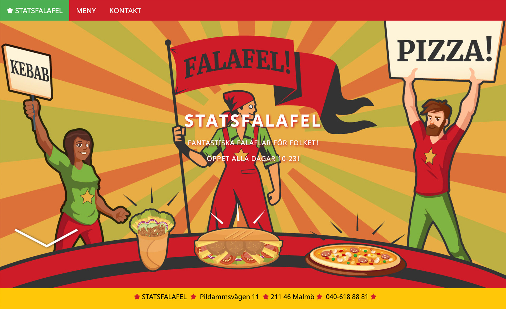
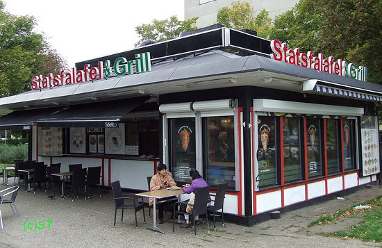

UX
STATSFALAFEL
TillbakaIndividuell hemuppgift, UX Design-kursen "Programmering för UX-produktion", EC Utbildning 2020.
I denna inlämningsuppgift skulle man skapa en hemsida till en befintlig restaurang. Hemsidans stil skulle anpassas efter vald restaurang. Kraven för att klara uppgiften var följande:
- Minst 2 html-sidor, en startsida med lite "flash" och en med någon meny för maten, och meny måste vara gjord i html.
- Skulle skala efter webbläsarens storlek.
- Skulle utnyttja de semantiska Html5 taggarna.
Jag valde falafel- och kebabrestaurangen "Statsfalafel" som ligger i närheten där jag bor. Restaurangens namn "Statsfalafel" har alltid fått mina associationsbanor att röra sig mot DDR, Sovjet och andra kommunistiska länder. (Egentligen tror jag namnet ska vara "Stadsfalafel" men kioskägarna har inte bemödat sig om att anlita någon språklig granskare innan man satte upp skylten.) Det var kul att leka med gammal socialistisk propagandaestetik i denna uppgift. Det var ö.h givande att experimentera med css, använda sig av Jquerys för olika skärmstorlekar och rent allmänt få gräva ner sig i teknik. Länk till Statsfalafel

Statsfalafel, det är gott. Prova själv.
